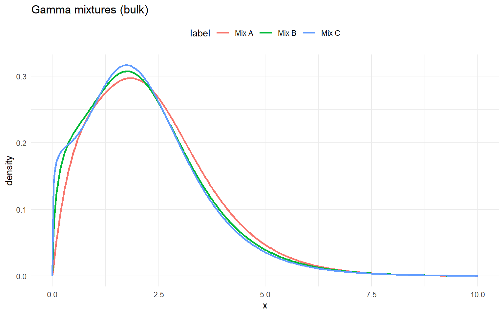
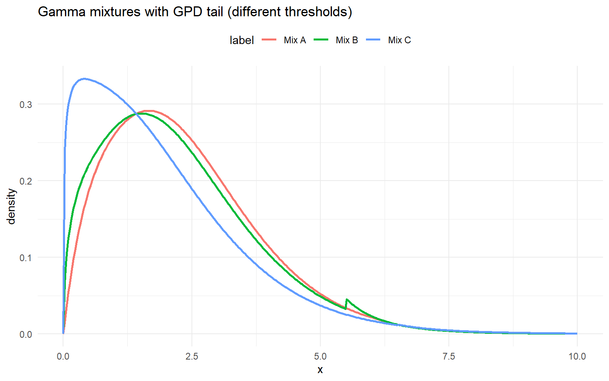

grid <- seq(0, 10, length.out = 400)
gamma_sets <- list(
list(label = "Mix A", w = c(0.6, 0.3, 0.1), shape = c(2.0, 5.0, 9.0), scale = c(1.0, 0.6, 0.3)),
list(label = "Mix B", w = c(0.5, 0.3, 0.2), shape = c(1.5, 4.0, 7.0), scale = c(1.2, 0.7, 0.35)),
list(label = "Mix C", w = c(0.4, 0.3, 0.3), shape = c(1.2, 3.5, 6.0), scale = c(1.4, 0.75, 0.4))
)
example <- gamma_sets[[1]]
dens <- do.call(rbind, lapply(gamma_sets, function(s) {
data.frame(
x = grid,
density = dGammaMix(grid, w = s$w, shape = s$shape, scale = s$scale),
label = s$label
)
}))Gamma
Gamma
Gamma mixture kernel
A gamma component with shape (>0) and scale (>0) has density [ f(y,) = ,y^{}!(-), y>0. ]
A finite gamma mixture with (J) components is [ f(y)=_{j=1}^J w_j,f_j(y_j,j), w_j, {j=1}^J w_j=1. ]
Parameter mapping (math () code): () shape, () scale, and weights (w_j) w[j].
The *MixGpd variant uses the same splicing idea: gamma mixture below (u) and a GPD tail above (u).
Tail mapping (math () code): (u) threshold, () tail_scale, () tail_shape.
Without GPD (mixture kernel)
dGammaMix(2, w = example$w, shape = example$shape, scale = example$scale)[1] 0.295dGammaMix(2, w = example$w, shape = example$shape, scale = example$scale, log = TRUE)[1] -1.22pGammaMix(2, w = example$w, shape = example$shape, scale = example$scale)[1] 0.452pGammaMix(2, w = example$w, shape = example$shape, scale = example$scale, lower.tail = FALSE)[1] 0.548pGammaMix(2, w = example$w, shape = example$shape, scale = example$scale, log.p = TRUE)[1] -0.793qGammaMix(0.95, w = example$w, shape = example$shape, scale = example$scale)[1] 5.01qGammaMix(0.95, w = example$w, shape = example$shape, scale = example$scale, lower.tail = FALSE)[1] 0.475df_gamma <- do.call(rbind, lapply(gamma_sets, function(ps) {
data.frame(x = grid, density = density_curve(grid, dGammaMix, list(w = ps$w, shape = ps$shape, scale = ps$scale)), label = ps$label)
}))
ggplot(df_gamma, aes(x = x, y = density, color = label)) +
geom_line(linewidth = 1) +
labs(title = "Gamma mixtures (bulk)", x = "x", y = "density") +
theme_minimal() + theme(legend.position = "top")
Gamma mixture with GPD tail
u <- 6
tail_scale <- 1.0
tail_shape <- 0.2dGammaMixGpd(6.5, w = example$w, shape = example$shape, scale = example$scale,
threshold = u, tail_scale = tail_scale, tail_shape = tail_shape)[1] 0.0109dGammaMixGpd(6.5, w = example$w, shape = example$shape, scale = example$scale,
threshold = u, tail_scale = tail_scale, tail_shape = tail_shape, log = TRUE)[1] -4.51pGammaMixGpd(6.5, w = example$w, shape = example$shape, scale = example$scale,
threshold = u, tail_scale = tail_scale, tail_shape = tail_shape)[1] 0.988pGammaMixGpd(6.5, w = example$w, shape = example$shape, scale = example$scale,
threshold = u, tail_scale = tail_scale, tail_shape = tail_shape, lower.tail = FALSE)[1] 0.012qGammaMixGpd(0.95, w = example$w, shape = example$shape, scale = example$scale,
threshold = u, tail_scale = tail_scale, tail_shape = tail_shape)[1] 5.01gamma_gpd_sets <- list(
list(label = "Mix A", w = c(0.6, 0.4), shape = c(2.0, 5.0), scale = c(1.0, 0.6), threshold = 6.0, tail_scale = 1.0, tail_shape = 0.2),
list(label = "Mix B", w = c(0.5, 0.5), shape = c(1.5, 4.0), scale = c(1.2, 0.7), threshold = 5.5, tail_scale = 0.8, tail_shape = 0.15),
list(label = "Mix C", w = c(0.7, 0.3), shape = c(1.2, 3.5), scale = c(1.4, 0.75), threshold = 6.5, tail_scale = 1.2, tail_shape = 0.25)
)
df_gamma_gpd <- do.call(rbind, lapply(gamma_gpd_sets, function(ps) {
data.frame(x = grid, density = density_curve(grid, dGammaMixGpd, list(w = ps$w, shape = ps$shape, scale = ps$scale, threshold = ps$threshold, tail_scale = ps$tail_scale, tail_shape = ps$tail_shape)), label = ps$label)
}))
ggplot(df_gamma_gpd, aes(x = x, y = density, color = label)) +
geom_line(linewidth = 1) +
labs(title = "Gamma mixtures with GPD tail (different thresholds)", x = "x", y = "density") +
theme_minimal() + theme(legend.position = "top")